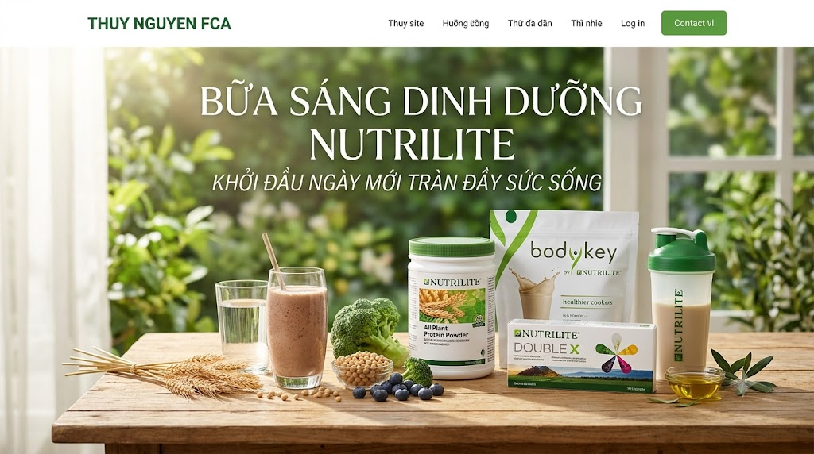
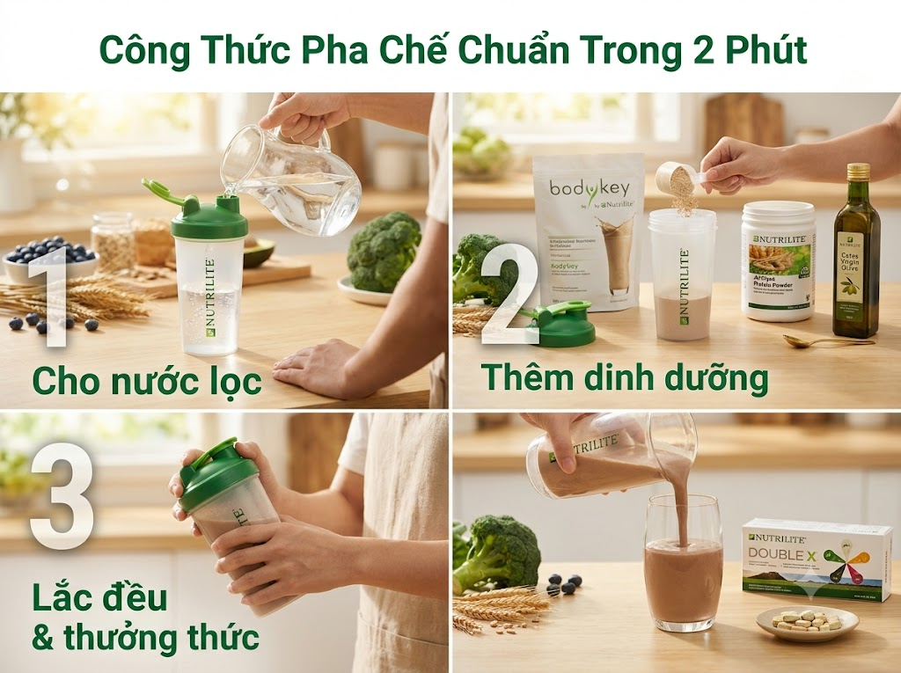

Thuỷ Nguyễn FCA
Chuyên gia chăm sóc sức khỏe chủ động và dinh dưỡng cá nhân hóa. Cam kết đồng hành 1:1, hướng dẫn từng bước để bạn và gia đình xây dựng lối sống khỏe đẹp, tự chủ và tràn đầy năng lượng mỗi ngày.
Đừng để cơ thể hoạt động với “bình xăng rỗng”! Chỉ 2 phút mỗi sáng để nạp trọn bộ đạm thực vật tinh chất, chất xơ hòa tan, 22 loại dưỡng chất thực vật và chất béo tốt cùng giải pháp Nutrilite.

Những thói quen tưởng chừng vô hại vào buổi sáng lại âm thầm rút cạn năng lượng và ảnh hưởng vóc dáng.
Để bụng đói đến văn phòng khiến dạ dày cồn cào dịch vị, hạ đường huyết nhẹ, run tay, chóng mặt và mất khả năng tập trung công việc.
Gói xôi, ổ bánh mì hay bún phở nhiều nước béo làm tăng vọt rồi tụt nhanh đường huyết, khiến bạn buồn ngủ gục gà lúc 10h sáng và ậm ạch bụng.
Bữa ăn thiếu đạm sạch và thiếu vi chất kích hoạt phản xạ thèm ăn vặt liên tục vào giữa buổi, làm chậm quá trình trao đổi chất và tích lũy mỡ bụng.
Thiết kế dinh dưỡng chuyên sâu, cá nhân hóa theo từng nhu cầu thể trạng thực tế.
Tối Ưu Thời Gian • Năng Lượng Đỉnh Cao
Giữ Cơ • Đốt Mỡ • Không Cần Nhịn Ăn
Đạm Sạch Dễ Hấp Thu • Bảo Vệ Tim Mạch
Sự kết tinh giữa tinh hoa từ thiên nhiên hữu cơ và đỉnh cao khoa học hơn 90 năm của Nutrilite.
Chiết xuất từ đậu nành hữu cơ, lúa mì và đậu Hà Lan. Cung cấp đầy đủ 9 axit amin thiết yếu, không cholesterol, hỗ trợ tái tạo mô cơ săn chắc và tăng cường năng lượng.
Khẩu phần thay thế bữa ăn hoàn chỉnh thơm ngon, bổ sung chất xơ, vitamin và khoáng chất. Giúp no lâu, kiểm soát cân nặng khoa học mà không bị mệt mỏi.
Cung cấp 12 vitamin, 10 khoáng chất cùng dưỡng chất thực vật đa màu sắc từ nông trại hữu cơ. Chống oxy hóa tế bào chủ động và tăng sức đề kháng tự nhiên.
Nguồn axit béo không bão hòa đơn giàu Omega-9. Hỗ trợ cơ thể hòa tan và hấp thu tối đa các vitamin tan trong dầu (A, D, E, K), nuôi dưỡng thành mạch máu.
Chiết xuất từ nguồn cá hồi tự nhiên vùng biển Na Uy lạnh giá. Giúp hỗ trợ giảm cholesterol xấu, bảo vệ hệ tuần hoàn tim mạch, tăng cường thị lực và cải thiện sự tập trung của não bộ.
Tại sao hàng triệu người chọn giải pháp bữa sáng dinh dưỡng cân bằng mỗi ngày?
| Tiêu Chí Đánh Giá | Bữa Sáng Quán Xá (Bánh Mì, Xôi, Phở) | Bữa Sáng Dinh Dưỡng Cân Bằng |
|---|---|---|
| Hàm lượng Protein | Thấp, nhiều thịt chế biến & mỡ động vật | Đạm thực vật tinh chất, hấp thu trọn vẹn |
| Chỉ số đường huyết (GI) | Cao → Dễ gây ngái ngủ, nhanh đói cồn cào | Thấp & Ổn định → No lâu, tỉnh táo 4–5h |
| Vi chất & Rau củ | Nghèo nàn vitamin, thiếu xơ hòa tan | Đủ 22 dưỡng chất thực vật, vitamin, khoáng |
| Thời gian chuẩn bị | 20 - 30 phút chờ đợi, chen chúc mua hàng | Chỉ 2 phút pha chế nhanh gọn tại nhà/công ty |
| Cảm giác hệ tiêu hóa | Đầy hơi, ậm ạch do nhiều dầu mỡ chiên | Êm bụng, nhẹ nhõm, không cholesterol |
Đơn giản, tiện lợi, thơm ngon và phù hợp cho cả gia đình bận rộn.

Đong khoảng 250ml - 300ml nước nguội hoặc nước ấm vào bình lắc chuyên dụng Nutrilite.
Cho 1 gói BodyKey + 1 muỗng Protein All Plant + 1 thìa nhỏ dầu Oliu Extra Virgin vào bình.
Lắc đều trong 30 giây cho tan mịn, uống kèm khẩu phần viên Double X và Omega-3 để trọn vẹn năng lượng.
"Trước đây sáng nào mình cũng vội, lúc nhịn đói, lúc ăn tạm gói xôi khiến 10h là lả đi vì buồn ngủ. Từ khi đổi sang ly dinh dưỡng lắc này, chỉ mất 2 phút chuẩn bị, bụng nhẹ tênh, tỉnh táo làm việc liền mạch đến trưa."
"Mấy lần trước siết cân bằng cách nhịn sáng thì trưa lại ăn bù gấp đôi. Dùng bữa sáng giàu đạm thực vật này, calo được định lượng rõ ràng mà người tràn đầy năng lượng, vòng eo gọn lại thấy rõ sau 6 tuần."
"Nhà có ba mẹ lớn tuổi và con nhỏ, bữa sáng này giải phóng hoàn toàn chuyện nấu nướng. Ba mẹ tiêu hóa nhẹ nhàng, tốt cho tim mạch; con đi học đủ chất tập trung. Cả nhà đều rất hài lòng."
Tích chọn các câu hỏi bên dưới để nhận phân tích chi tiết và phác đồ thực đơn cá nhân hóa miễn phí từ Thuỷ Nguyễn FCA!
Chuyên gia chăm sóc sức khỏe chủ động và dinh dưỡng cá nhân hóa. Cam kết đồng hành 1:1, hướng dẫn từng bước để bạn và gia đình xây dựng lối sống khỏe đẹp, tự chủ và tràn đầy năng lượng mỗi ngày.